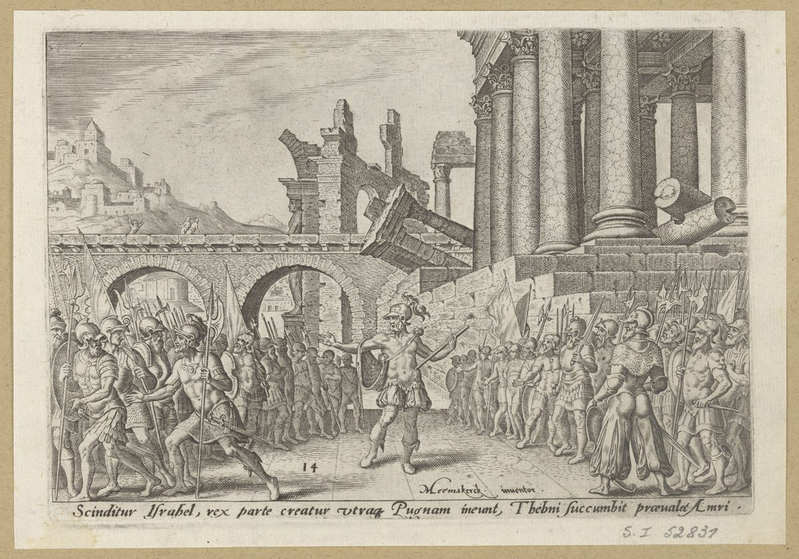

1 Reyes 16 — La Traducción Mister

1 Reyes 16:21–22. Lámina 14 de una serie sobre los desastres del pueblo judío. La línea en latín dice Scinditur Israhel, rex parte creatur utraque. Pugnam ineunt, Thebni succumbit, praevalet Amri: «Israel se parte, y a cada lado se hace un rey. Entran en batalla; Tebni cae, Amri prevalece». Los versículos dicen que las dos mitades iban tras dos hombres y que una pudo más. La batalla, las armaduras y las ruinas romanas son cosa del grabador.

Notas del traductor — versículo por versículo
El otro Jehú. «Vino la palabra de Jehová a Jehú hijo de Hanani»: este Jehú es un profeta, y no el Jehú que toma el trono en 2 Reyes 9. Crónicas tiene a un vidente llamado Hanani que reprende a Asa por apoyarse en el rey de Aram (2 Crónicas 16:7) y a un Jehú hijo de Hanani que reprende a Josafat (19:2), y dice que sus palabras fueron recogidas en el libro de los reyes de Israel (20:34). La Biblia griega de la tradición del Vaticano hace venir la palabra «por mano de» Jehú aquí, donde el hebreo tiene «a».
«Del polvo». Es la sentencia sobre Jeroboam con una frase cambiada. Jeroboam oyó «te alcé de en medio del pueblo, y te hice caudillo sobre mi pueblo Israel» (1 Reyes 14:7, ya en estas páginas). Baasa oye «te alcé del polvo», con el mismo verbo, y la palabra es afar. El cántico de Ana tiene el polvo y el mismo verbo en una sola línea: «Levanta del polvo al pobre; del muladar alza al necesitado» (1 Samuel 2:8, ya en estas páginas). El reino aquí es cosa dada, y el que lo da puede recordar dónde encontró al hombre. «Caudillo» es nagid. La TNM 1987 dice «caudillo», que esta página sigue, la RV60 «príncipe», la NVI «gobernante», y la TNM 2019 «líder». El versículo 2 termina en «sus pecados», los de ellos. La RV60 imprime «con tus pecados», donde la RV 1909 tiene «con sus pecados» y la TNM 1987 «con los pecados de ellos». La Biblia griega de la tradición del Vaticano tiene «sus vanidades».
«Yo quemo tras Baasa». El verbo es el que oyó la casa de Jeroboam, ba’ar, «como se quema el estiércol» (1 Reyes 14:10, ya en estas páginas). La TNM 1987 dice «voy a barrer de modo completo tras», la RV60 «barreré la posteridad de», y la NVI «estoy a punto de aniquilarte». La Biblia griega de la tradición del Vaticano tiene «yo levanto», que es otro sentido de las mismas letras. ⚠ La frase cambia de persona a la mitad. Le habla a Baasa de Baasa, y luego dice «tu casa». La RV 1909 conserva «tu casa». La RV60 y la TNM 1987 lo alisan a «su casa», donde el hebreo tiene beitkha. El versículo 4 son los perros y las aves de 1 Reyes 14:11 (ya en estas páginas), con el nombre cambiado. Como prometía la nota de allí, el hombre que cumplió aquella sentencia la recibe ahora él mismo.
⚠ «Como porque lo hirió». La muerte de Baasa ya está contada, y el versículo 7 vuelve atrás para dar la sentencia por segunda vez, con dos motivos. Uno es que fue como la casa de Jeroboam. El otro es ve’al asher-hikkah oto, «y porque lo hirió», y ese «lo» no tiene nombre. Si es Nadab, o la casa de Jeroboam, entonces Baasa es condenado por el acto que 1 Reyes 15:29 (ya en estas páginas) llama el cumplimiento de la palabra de Jehová. La RV 1909 dice «porque lo había herido», la TNM 1987 «porque lo derribó», la TNM 2019 «por haberlo matado», y la RV60 «porque la había destruido». La versión inglesa Douay, siguiendo la Vulgata, hace del profeta la víctima: lo mató, «es decir, a Jehú hijo de Hanani, el profeta». El hebreo no da aquí ningún nombre, y Crónicas tiene a un Jehú hijo de Hanani vivo en el reinado de Josafat (2 Crónicas 19:2). La NVI reescribe la cláusula: «Y aunque destruyó a la familia de Jeroboán», de modo que deja de ser un cargo. Lo mismo sucede en mayor escala con Jehú el rey. Jehová lo alaba por lo que hizo a la casa de Acab (2 Reyes 10:30), y Oseas pide cuentas de «la sangre de Jezreel» a la casa de Jehú (Oseas 1:4, ya en estas páginas). Ninguno de los dos textos explica cómo encajan las dos cosas, y este versículo las deja una al lado de la otra.
El año veintiséis. Baasa comenzó en el año tercero de Asa y reinó veinticuatro (1 Reyes 15:33, ya en estas páginas), así que otra vez las partes de año cuentan como años, y los dos de Ela van del veintiséis al veintisiete. Crónicas tiene a Baasa marchando contra Judá en el año treinta y seis de Asa (2 Crónicas 16:1), diez años después de que este versículo lo haya sepultado. La nota de 1 Reyes 15:17 (ya en estas páginas) expone el problema. La Biblia griega de la tradición del Vaticano no tiene fecha en los versículos 8, 10 ni 15.
«Bebiendo hasta emborracharse». Dos participios hebreos juntos, shoteh shikkor, «bebiendo, borracho». La frase está en dos versículos de la Biblia hebrea, aquí y sobre Ben-adad en sus cabañas (1 Reyes 20:16, ya en estas páginas), y a los dos les llega el golpe bebiendo. El ejército del rey está lejos, en Gibetón (versículo 15), y el rey está en casa de un mayordomo en su propia capital. La TNM 1987 dice «bebiendo hasta emborracharse», que esta página sigue, la RV60 «bebiendo y embriagado», y la NVI «emborrachándose». La mitad de este versículo es la de los carros, que manda Zimri. Arsa «estaba sobre la casa», el cargo que tuvo Ahisar bajo Salomón (1 Reyes 4:6, ya en estas páginas). La TNM 1987 dice «que estaba sobre la casa», la RV60 «su mayordomo», y la NVI «administrador de su palacio».
«Que orinara contra la pared». Es la palabra de soldado para un varón, mashtín be-qir, conservada como en 1 Reyes 14:10 (ya en estas páginas). La RV 1909 dice «meante á la pared», y la TNM 1987 «que orinara contra una pared». La RV60 dice «varón», la NVI «hasta el último varón», y la TNM 2019 «ningún hombre». La Biblia griega de la tradición del Vaticano no tiene nada de esto y pasa directamente de la matanza a la palabra de Jehová. «Sus redentores» es go’alav, los parientes que tenían el deber de responder a una muerte, el «redentor de la sangre» de Números 35:19 (ya en estas páginas). Zimri quita de en medio a los hombres que habrían ido tras él. La TNM 1987 dice «sus vengadores de sangre», que nombra el oficio, y la RV60 «parientes», que no lo nombra. «Su amigo» está en singular en el hebreo. Puede ser un colectivo, o el título cortesano de «amigo del rey» de 1 Reyes 4:5 (ya en estas páginas), y el versículo no dice cuál. La RV60 dice «amigos».
«Con sus vapores». La palabra es hevel, el aliento de Eclesiastés. «Sus vapores» está en tres versículos de la Biblia hebrea: Deuteronomio 32:21 (ya en estas páginas), aquí y en el versículo 26. La palabra dice lo que valen, y no dice lo que son. La RV 1909 y la RV60 dicen «vanidades». La NVI dice «ídolos inútiles» y la TNM 1987 «vanos ídolos», y las dos suplen un sustantivo que el hebreo no pone.
«Siete días». Es el reinado más corto que registra Reyes. El siguiente es el mes de Salum (2 Reyes 15:13). El nombre es el del hombre de Peor (Números 25:14, ya en estas páginas), y el texto no traza ninguna línea entre los dos. Tendrá un futuro propio: cuando Jehú el rey entra en Jezreel, Jezabel le grita desde arriba: «¿Hay paz, Zimri, asesino de su señor?» (2 Reyes 9:31). Una semana en el trono, y el nombre se convierte en la palabra para lo que hizo.
Otra vez Gibetón. «El pueblo estaba acampado contra Gibetón, que era de los filisteos»: Nadab murió sitiando esta ciudad en el año tercero de Asa (1 Reyes 15:27–28, ya en estas páginas), y este es el veintisiete. Si el ejército se fue alguna vez, el texto no lo dice, pero ya son dos los reyes que han perdido el trono mientras Israel se ocupaba en no tomar Gibetón. «El pueblo» es ha-am, los hombres en armas. La RV60 dice «el pueblo», la NVI «las tropas», y la TNM 2019 «los soldados». «Todo Israel» hace entonces un rey en un día en un campamento. Omri es «el jefe del ejército», el título de Joab (1 Reyes 1:19, ya en estas páginas). Reyes no le da padre ni tribu, y tampoco a Zimri, mientras que Baasa tenía las dos cosas (1 Reyes 15:27, ya en estas páginas).
«La ciudadela de la casa del rey». La frase está en un versículo de la Biblia hebrea. La palabra es armón, el recinto fortificado. La RV60 dice «el palacio», la TNM 1987 «la torre de habitación», la TNM 2019 «la torre fortificada», y la NVI «la torre del palacio real». La Biblia griega de la tradición del Vaticano tiene «la cueva». «Quemó con fuego la casa del rey sobre sí»: la TNM 1987 dice «quemó con fuego sobre sí la casa del rey», y la RV60 «prendió fuego a la casa consigo». Omri reina seis años en Tirsa y luego edifica en otra parte (versículos 23–24), y el texto no relaciona los dos hechos.
Un veredicto completo para un reinado corto. «Por sus pecados que pecó, haciendo lo malo a los ojos de Jehová, andando en el camino de Jeroboam»: Zimri tuvo siete días, gastados en una matanza y un sitio, y Reyes le da el veredicto que dio a un rey de veintidós años, hasta lo de hacer pecar a Israel. La fórmula es una fórmula, y no se dobla ante el calendario. «Su conspiración que conspiró» conserva la repetición del hebreo, kishro asher qashar. La frase está en dos versículos de la Biblia hebrea, aquí y sobre Salum (2 Reyes 15:15), los dos reinados más cortos de Reyes. Es el único hecho que la fórmula nombra para cada uno. La TNM 1987 dice «su conspiración con que conspiró», la RV60 «la conspiración que hizo», y la NVI «lo que atañe a su rebelión».
«Se dividió por la mitad». El hebreo dice «mitad» tres veces en un versículo, la-chetsi … chatsi … ve-ha-chatsi, y esta página lo conserva. El reino que se separó de Judá en 1 Reyes 12 (ya en estas páginas) se parte ahora otra vez, y el hombre que empezó esta vuelta mandaba la mitad de los carros. La RV60 y la TNM 1987 dicen «dos partes», la NVI «dos facciones», y la TNM 2019 «dos bandos». Solo Tibni lleva «para hacerlo rey» junto a su mitad, porque la otra mitad ya tenía rey. El nombre está en dos versículos de la Biblia hebrea, estos dos, y no se sabe nada más de él ni de Ginat.
«Y Tibni murió, y Omri reinó». Cuatro palabras hebreas. Según las fechas de los versículos 15 y 23 esto pudo durar cuatro años, y el texto no dice cómo fue. La RV60 y la TNM 1987 dicen «Tibni murió». La NVI dice «el cual murió en la contienda», que el hebreo no dice. La Biblia griega de la tradición del Vaticano añade un hermano, «y Joram su hermano en aquel tiempo», y hace reinar a Omri «después de» Tibni. Las lecturas difieren.
Doce años que no cuadran. Omri es hecho rey en el año veintisiete de Asa (versículos 15–16). Aquí reina desde el treinta y uno, doce años, y sin embargo Acab lo sucede en el treinta y ocho (versículo 29). La propuesta habitual es que los doce se cuentan desde el campamento de Gibetón, del veintisiete al treinta y ocho, y que el treinta y uno marca el fin de Tibni. Es una propuesta, y el versículo no lo dice.
⭐ El precio de una capital. «Compró el monte Samaria a Semer por dos talentos de plata». La plata del censo de Éxodo da el tamaño de un talento: 603,550 hombres a medio siclo son 301,775 siclos, y el texto los llama cien talentos y 1,775 siclos (Éxodo 38:25–26, ya en estas páginas), así que un talento son 3,000 siclos y Omri pagó 6,000. Abraham pagó 400 por Macpela (Génesis 23:16) y David 50 por la era (2 Samuel 24:24, ya en estas páginas). Un kikkar es un lingote, y esto es una capital comprada al contado, de una dinastía y de ninguna tribu. La paráfrasis inglesa The Living Bible imprime «for $4,000», una suma que no está en el hebreo. Su hijo intentará lo mismo con una viña y le dirán que no (1 Reyes 21:2–3, ya en estas páginas).
Shomrón, de Semer. El dueño es Semer y la ciudad es Shomrón, y el versículo hace él mismo el juego de palabras: «según el nombre de Semer, señor del monte: Samaria — Shomrón». El español pierde el vínculo, y la Biblia griega de la tradición del Vaticano lo conserva, Semer y Semerón. Las letras son las de shamar, guardar, y Miqueas usará ese verbo sobre este mismo rey: «se guardan los estatutos de Omri» (Miqueas 6:16, ya en estas páginas). El versículo llama Samaria al monte antes de explicar el nombre. 1 Reyes 13:32 (ya en estas páginas) ya había hablado de «las ciudades de Samaria», y este es el versículo que aquella nota esperaba. El hebreo es har, la palabra corriente para un monte. La RV60 dice «el monte», la TNM 1987 «la montaña», y la NVI «el cerro». «Edificó el monte» es más escueto en el hebreo que cualquiera de ellas, sin ningún «en». La RV60 dice «edificó en el monte». Semer es «señor del monte». La RV 1909 dice «señor que fué de aquel monte», la TNM 1987 «el amo de la montaña», y la RV60 «que fue dueño de aquel monte». La ciudad que nombró sigue en pie hasta que Asiria la toma (2 Reyes 18:10).
Lo que Reyes deja fuera. «Hizo peor que todos los que hubo antes de él»: Jeroboam oyó eso en 1 Reyes 14:9 (ya en estas páginas), Omri se lo gana aquí, y Acab se lo ganará cinco versículos después. «Y en su pecado»: el hebreo escrito tiene «sus pecados» y la tradición de lectura «su pecado» (véase ketiv / qere), y la traducción sigue la lectura. La RV 1909 y la TNM 1987 tienen «en su pecado», y la RV60 «en el pecado». Para «su poderío que mostró» Reyes envía al lector al libro perdido. Otros recordaron más. La inscripción de Mesa, en el Louvre, nombra a «Omri rey de Israel» como opresor de Moab, y los registros asirios siguen llamando al reino la casa de Omri cuando su línea ya ha desaparecido. Esas dos cosas se refieren según traducciones publicadas, y ninguna es parte de este texto. En Reyes el fundador de la dinastía es una compra de tierra y un veredicto.
Acab hijo de Omri. El nombre completo sale tres veces en dos versículos. Aquí se nombra a un hijo por su padre porque ya hay una dinastía por la que nombrarlo. La Biblia griega de la tradición del Vaticano lo fecha en «el año segundo de Josafat» donde el hebreo tiene el treinta y ocho de Asa, y justo antes inserta todo un relato del reinado de Josafat, que el hebreo guarda para el capítulo 22 (1 Reyes 22:41, ya en estas páginas). Las dos cronologías difieren. El relato asirio de la batalla de Qarqar enumera «2,000 carros, 10,000 soldados de Acab, el israelita», según la traducción publicada, y Reyes nunca lo menciona.
«Como si fuera cosa ligera». El hebreo es una pregunta metida en una afirmación, ha-naqel, «¿era cosa ligera?» La pregunta está en dos versículos de la Biblia hebrea, aquí y en Ezequiel 8:17, sobre la casa de Judá. Los pecados de Jeroboam eran la medida fija del mal para cada rey de Israel, y para Acab son solo el punto de partida. La RV60 dice «le fue ligera cosa», la TNM 1987 «como si fuera la cosa más insignificante», la NVI «Como si hubiera sido poco», y la TNM 2019 «por si no fuera suficiente».
Jezabel hija de Et-baal. Entra en una oración subordinada. Salomón amó a mujeres sidonias y se fue tras Astoret de los sidonios (1 Reyes 11:1, 5, ya en estas páginas), y ahora la palabra vuelve. «Rey de los sidonios» es el uso amplio del nombre que explica la entrada de Sidón. Josefo, citando a Menandro, cuenta que un tal Itobalo, «el sacerdote de Astarté», mató al rey de Tiro y reinó treinta y dos años (Contra Apión 1.18), y se le suele identificar con este Et-baal, aunque nada en el versículo lo confirma. El significado de su nombre es incierto. Apocalipsis lo usará como nombre en clave (Apocalipsis 2:20, ya en estas páginas). «Fue y sirvió a Baal y se inclinó ante él»: es la advertencia de 1 Reyes 9:6 (ya en estas páginas), cumplida palabra por palabra. El hebreo tiene artículo, ha-ba’al, «el Baal», y todas las versiones del estante lo omiten, como esta página en Jueces 2:13 (ya en estas páginas).
La casa de Baal y la Aserá. «En la casa de Baal que edificó en Samaria»: el verbo es el que se usa para la casa de Salomón, y la capital de Israel tiene ahora un templo, para el dios equivocado. Jehú el rey lo derribará (2 Reyes 10:27). La TNM 1987 dice «la casa de Baal», y la RV60 «el templo de Baal». La Biblia griega de la tradición del Vaticano no imprime allí el nombre, y tiene «la casa de sus abominaciones». «Acab hizo la Aserá» lleva artículo, un objeto conocido: véase aserá. La TNM 1987 dice «el poste sagrado», la RV60 «una imagen de Asera», la NVI «una imagen de la diosa Aserá», y la RV 1909 «un bosque». La Biblia griega de la tradición del Vaticano añade una cláusula sobre la destrucción de su propia vida, que no está en el hebreo.
⭐ Un juramento que vence. «Con la pérdida de su primogénito eche sus cimientos, y con la pérdida de su hijo menor asiente sus puertas»: eso dijo Josué ante las ruinas de Jericó (Josué 6:26, ya en estas páginas), y aquí está el mismo par de verbos, en el mismo orden, tras la larga espera que aquella nota prometió. Hay un detalle en la línea final. Josué 6:26 dice que Josué juró, y no dice que Jehová se lo mandara. Reyes lo llama «la palabra de Jehová que habló por mano de Josué hijo de Nun». «Edificó» es el verbo llano. La RV60 tiene «reedificó», y la NVI «reconstruyó». Ya había gente en Jericó en tiempos de David (2 Samuel 10:5, ya en estas páginas), así que lo que levanta Hiel son cimientos y puertas, una ciudad amurallada. Es «el betelita», de la ciudad del becerro (1 Reyes 12:29, ya en estas páginas).
⚠ «Con la pérdida de». El hebreo es una sola letra, be-, en cada hijo: «en Abiram», «en Segub». Esta página conserva la versión de Josué 6:26, pero la frase lleva más que la letra. La RV 1909 dice «En Abiram», como la Biblia griega de la tradición del Vaticano. La RV60 dice «A precio de la vida de», la NVI «a costa de la vida de», y la TNM 1987 «Pagando con la pérdida de». El versículo no dice cómo murieron. Una lectura hace caer sobre él la maldición, un hijo en cada etapa de la obra. Otra, propuesta en estudios más antiguos, ve un sacrificio de fundación, un padre que entrega a sus hijos a los muros. El versículo no da ninguna de las dos, y esta página no elige. «Segub» es la lectura; el hebreo escrito tiene Segib (véase ketiv / qere), y la traducción sigue la lectura.
Tres palabras cumplidas. «Conforme a la palabra de Jehová que habló por mano de» ha cerrado ya tres cuentas en un capítulo y medio: la de Ahías (1 Reyes 15:29, ya en estas páginas), la de Jehú (versículo 12) y la de Josué, esta con siglos encima. El capítulo termina en el reinado del peor rey hasta ahora, con la observación de que la palabra sigue funcionando. La siguiente frase del libro tiene a un hombre que nadie conoce diciéndole a Acab que no habrá lluvia «sino por mi palabra» (1 Reyes 17:1, ya en estas páginas).
Patrones que vale la pena llevar adelante
Donde esta traducción mantiene las palabras exactas y distintas: «yo quemo» para ba’ar, como en 1 Reyes 14:10; «caudillo» para nagid; «que orinara contra la pared» para la palabra de soldado; «sus redentores» para go’alav; «con sus vapores» para hevel, como en Deuteronomio 32:21; «la ciudadela» para armón; «su conspiración que conspiró», con la repetición del hebreo; «por la mitad» y dos mitades más; «edificó el monte», sin ningún «en»; «cosa ligera» para naqel; «la Aserá», con artículo; y «con la pérdida de», como en Josué 6:26. El hebreo escrito y el leído quedan registrados en los versículos 26 y 34, y la Biblia griega de la tradición del Vaticano se nombra dondequiera que sigue su propio camino, lo cual en este capítulo es a menudo.
Ecos pagados. La sentencia sobre la casa de Jeroboam pasa al hombre que la cumplió (1 Reyes 14:7–11; 15:29); Gibetón (1 Reyes 15:27); «las ciudades de Samaria» (1 Reyes 13:32); los estatutos de Omri (Miqueas 6:16); la advertencia de ir a servir a otros dioses e inclinarse ante ellos (1 Reyes 9:6); los sidonios (1 Reyes 11:1, 5); las Aserás (1 Reyes 14:15, 23); el juramento de Josué sobre Jericó (Josué 6:26).
Ecos plantados. Elías, y «sino por mi palabra» (1 Reyes 17:1, ya en estas páginas); Ben-adad bebiendo hasta emborracharse (1 Reyes 20:16, ya en estas páginas); la viña de Nabot, que un rey no pudo comprar (1 Reyes 21:2–3, ya en estas páginas); los perros y las aves sobre la casa de Acab (1 Reyes 21:24, ya en estas páginas); Josafat en su propio lugar (1 Reyes 22:41); Jehú el rey, y «¿Hay paz, Zimri?» (2 Reyes 9:31); la casa de Baal derribada (2 Reyes 10:27); el mes de Salum (2 Reyes 15:13, 15); la caída de Samaria (2 Reyes 18:10); Jehú hijo de Hanani y Josafat (2 Crónicas 19:2; 20:34). Los demás están aún por llegar en esta traducción.
Siguiente en este libro: 1 Reyes 17 — Elías el tisbita dice a Acab que no habrá rocío ni lluvia sino por su palabra; los cuervos lo alimentan junto al arroyo de Querit; una viuda de Sarepta lo alimenta de una vasija que no se acaba; y su hijo muere y vuelve.